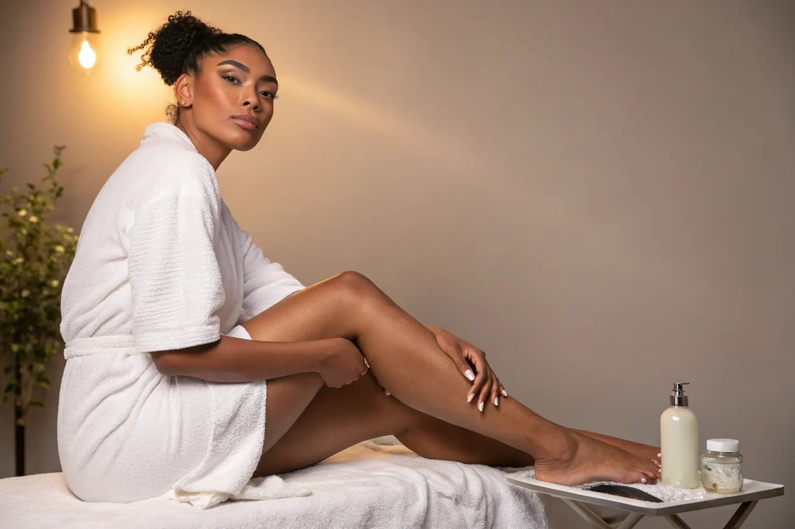
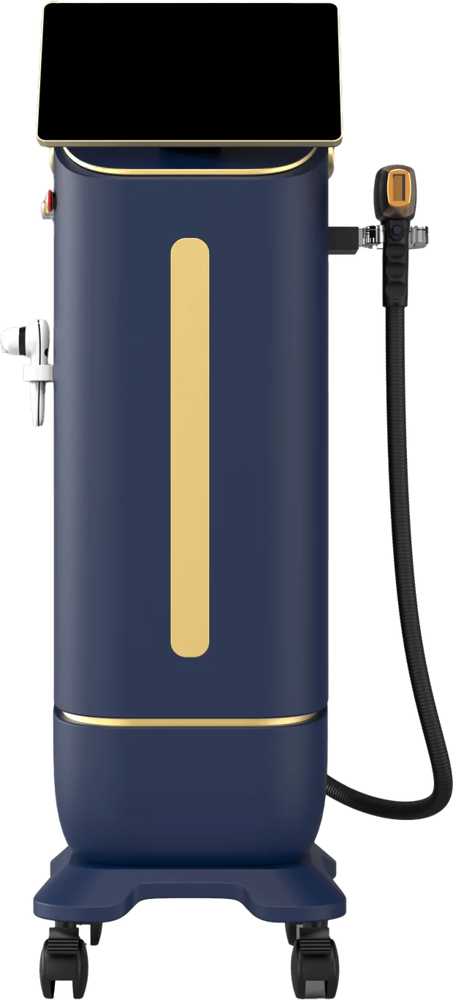

Haarentfernung, die du vorher verstehst.
ICE-Diodenlaser und Alexandrit in einem Handstück, vier Wellenlängen, Kühlung auf −26 °C während des Impulses. Für die Hauttypen I bis VI. Und mit einer Sitzungszahl, die auf dem Tisch liegt, bevor du zahlst.
- Hauttyp I–VI
- −26 °C Kühlung
- 4 Wellenlängen
- Mo–Sa 11–18 Uhr
Kontaktkühlung während jedes Impulses. Deshalb sagen Kundinnen „Klopfen“ und nicht „Schmerz“.
Alle Hauttypen nach Fitzpatrick — möglich durch vier Wellenlängen von 755 bis 1064 nm.
Sitzungen sind realistisch, im Abstand von 4–8 Wochen. Das sagen wir vorher.
Bei Google — jede einzelne Rezension mit voller Sternzahl, keine Ausnahme.
Vier Bereiche. Und zu jedem eine ehrliche Prognose.
Wir machen nicht alles — dafür das, was wir machen, mit Geräten, die wir erklären können.

Dauerhafte Haarentfernung
Diodenlaser und Alexandrit, vier Wellenlängen, Kühlung während des Impulses. Für Frauen und Männer, von der Oberlippe bis Ganzkörper.
- 755 / 808 / 940 / 1064 nm
- Testimpuls gratis
- Fotodokumentation

Gesicht
Aqua Facial, Microneedling, Radiofrequenz, Plasma Pen.
Ansehen
Körper
G5 Bodyforming und kosmetische Lymphdrainage.
Ansehen
Wimpernverlängerung
Jede Naturwimper einzeln isoliert, Länge nach Tragfähigkeit statt nach Referenzfoto. Refill alle zwei bis drei Wochen.
Ansehen
Ein Laser, der vier Wellenlängen kann — und jemand, der dir sagt, warum das zählt.
Die meisten Studios haben ein Gerät und passen die Kundin daran an. Wir machen es andersherum: Der Smart Scanner liest deinen Hauttyp aus, und daraus ergibt sich die Wellenlänge. 755 nm greift feines Haar, 1064 nm geht tiefer und umgeht das Melanin in der Oberhaut. Genau deshalb sind hier auch dunkle Hauttypen sicher behandelbar.
- Wellenlängen
- 755–1064Nanometer — Diode und Alexandrit in einem Handstück
- Kühlung
- −26 °CAktiv während des Impulses, nicht danach
- Hauttypen
- I – VIVollständige Fitzpatrick-Skala, per Scanner erkannt
Drei Schritte. Keine Überraschungen.
Hautcheck & Testimpuls
Wir schauen uns Haut und Haar an, klären Sonne, Medikamente, Vorbehandlungen. Auf Wunsch ein Testimpuls, damit du das Gefühl kennst, bevor du dich entscheidest.
Behandlung
Reinigung, Schutzbrille, Gelfilm. Der Laser läuft in Bahnen, die Kühlung läuft mit. Du sagst jederzeit Stopp — vor allem im Intimbereich bestimmst du Tempo und Pausen.
Nachsorge & Plan
Beruhigende Pflege, Hinweise für 48 Stunden. Jede Sitzung wird dokumentiert, der nächste Termin liegt 4 bis 8 Wochen später.

„Nicht, um zu überreden, sondern um zu beruhigen.“
Tuba Sen führt Luxury Beauty by Sen allein. Wer dich berät, behandelt dich auch — und erinnert sich beim nächsten Mal an das, was beim letzten Mal war. Jede Sitzung landet in einer Kundenkarte, mit Areal, Einstellung und Reaktion der Haut.
Wenn eine Behandlung bei dir nicht sinnvoll ist, hörst du das. Weiße und graue Haare sprechen auf den Laser kaum an, sehr reaktive Haut braucht mildere Säuren, und manchmal ist der richtige Rat, erst einmal gar nichts zu machen.
- StudioAuerberger Allee 1, 53117 Bonn-Auerberg
- SprachenDeutsch und Türkisch
- TermineMontag bis Samstag, 11–18 Uhr
5,0 von 5 bei Google — ohne eine einzige Ausnahme.
Ein wirklich tolles Laserstudio. Tuğba ist nicht nur sehr freundlich, sondern auch fachlich absolut kompetent. Sie erklärt alles ruhig und verständlich, sodass man sich sofort sicher fühlt.
Super liebe und professionelle Behandlung. Man merkt sofort, dass hier mit Erfahrung und Herz gearbeitet wird. Ich fühle mich jedes Mal sehr gut aufgehoben.
Ich bin froh, dass ich Tuba gefunden habe. Nach wenigen Behandlungen merke ich schon den Unterschied, das Personal ist herzlich und das Studio gepflegt. Absolute Empfehlung!
Pro Areal. Pro Sitzung. Ohne Sternchen.
Keine Pakete, die du unterschreiben musst, bevor du weißt, ob es funktioniert. Wenn ein Areal weniger Termine braucht als geplant, sagen wir das — und du sparst.
- Oberlippe20 €
- Achseln40 €
- Intim & Bikini60 €
- Beine95 €
- Aqua Facial125 €
- Microneedling98 €
Preise je Sitzung · Stand August 2026
Die Fragen, die vor dem ersten Termin wirklich gestellt werden.
Wenn deine nicht dabei ist: einfach per WhatsApp schreiben. Antworten kosten nichts.
Tut die Laser-Haarentfernung weh?
Die meisten beschreiben es als kurzes, kühles Klopfen oder leichtes Zwicken. Die Haut wird während jedes Impulses auf bis zu −26 °C heruntergekühlt, der Kältereiz überlagert den Wärmereiz. Vor der ersten vollen Behandlung setzen wir auf Wunsch einen Testimpuls.
Funktioniert das auch bei dunkler Haut?
Ja, bis Hauttyp VI. Die 1064-nm-Wellenlänge dringt tiefer ein und umgeht das Melanin der Oberhaut. Ehrlich bleibt trotzdem ehrlich: Weiße und graue Haare enthalten kaum Melanin und sprechen kaum an — das sagen wir vorher, nicht nach der dritten Sitzung.
Wie viele Sitzungen brauche ich wirklich?
In der Regel 6 bis 10 im Abstand von 4 bis 8 Wochen. Der Laser erreicht nur Haare in der aktiven Wachstumsphase, und die ist nie bei allen gleichzeitig. Die Einschätzung für dein Areal bekommst du beim ersten Termin.
Was kostet das insgesamt?
Über 6 bis 10 Sitzungen liegen Achseln bei etwa 240 bis 400 €, Beine bei 570 bis 950 €. Es gibt keine Pakete, die du vorab kaufen musst.
Schreib einfach. Fragen kosten nichts.
Du musst nicht wissen, welche Behandlung die richtige ist — dafür ist der erste Termin da. Schreib per WhatsApp, was dich stört, und du bekommst eine ehrliche Einschätzung, bevor du irgendetwas buchst.
- AdresseAuerberger Allee 1
53117 Bonn-Auerberg - Telefon0174 5603565
- E-Mailsenm93882@gmail.com
- ÖffnungMo–Sa 11:00 – 18:00 Uhr